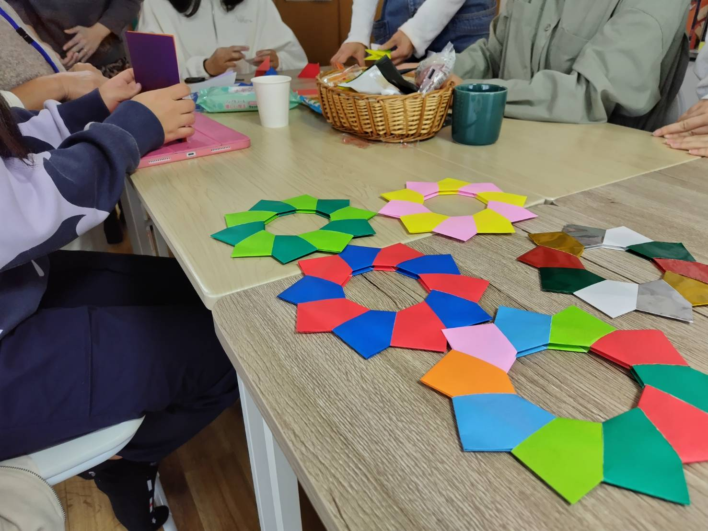
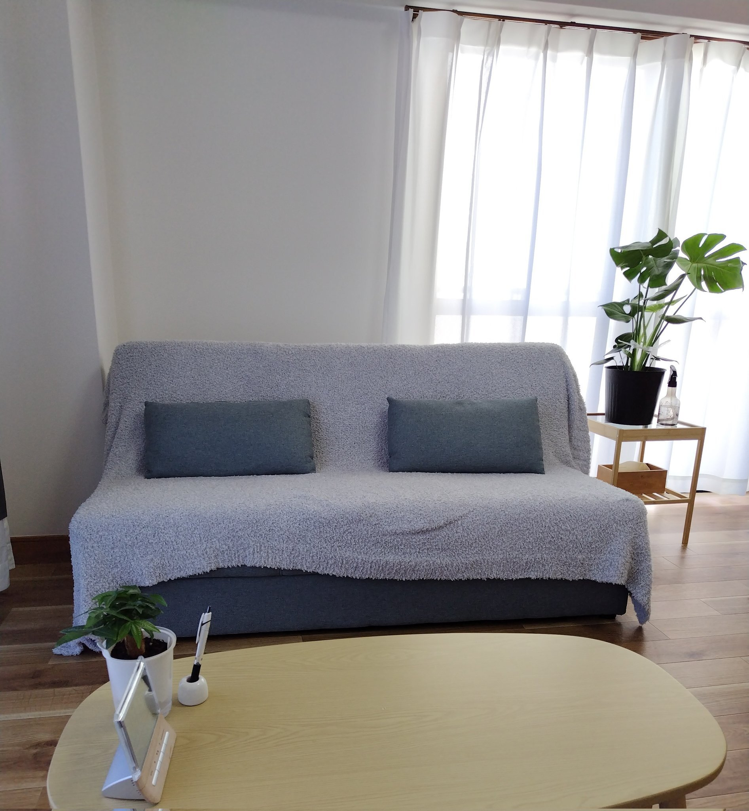
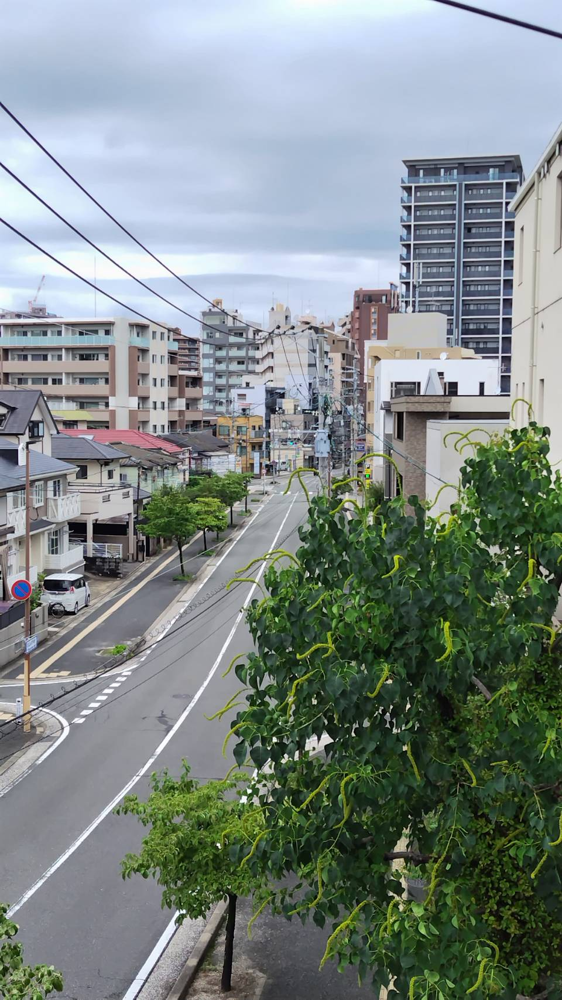
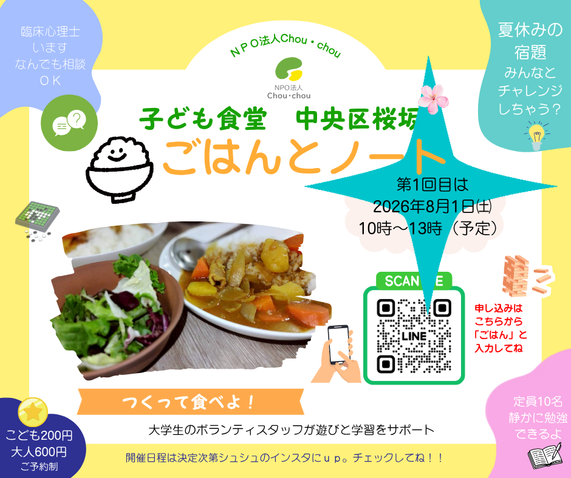

NPO法人 Chou·chou ／ Fukuoka
子どもと家族が、
孤立しない地域へ。
福岡市を拠点に、子育て家族への地域アウトリーチと
居場所づくりに取り組むNPO法人です。


代表 宮島篤子


福岡市を拠点に、子育て家族への地域アウトリーチと
居場所づくりに取り組むNPO法人です。




※ 開催日程はInstagramでもお知らせします。
令和8年度 福岡市委託事業。臨床心理士等が保育現場を訪問し、子どもと保育者をともに支援します。
子どもの居場所・食事・学習支援のコミュニティ事業。一緒にご飯を食べて、学びます。
保育・子育て支援に関わる方への研修や講座、他団体との協働プロジェクトを行っています。
子育て中の家族が「まず話せる場所」があること。それが、すべての出発点だと思っています。専門的な支援だけでなく、ご飯を一緒に食べること、顔見知りができること。そんな当たり前が、誰かの安心になる。
4人の子を育てながら、臨床心理士・公認心理師・看護師として福岡の地域に根ざして活動しています。
NPO法人Chou·chouは、会員のみなさま・寄付者のみなさまに支えられて活動しています。
関わり方は、あなたに合った形で選んでいただけます。
妊娠前から産後、子どもや若者、子育て世代、そして子どもの育成に関わるすべての方々を支援します。「何度でも転んでよい」精神を大切に、保護者の孤立を防ぎ、社会全体で障壁を取り払いながら、子どもの育ちを守る社会の実現をめざします。
特に、不登校、発達障がいのある児童や発達グレーゾーンと呼ばれる子どもたちへの支援を中核に置いています。
※ 個人情報保護のため、住所等は非公開としています。
〒810-0024
福岡県福岡市中央区桜坂1丁目6-33-305
地下鉄七隈線「桜坂駅」より徒歩圏内。
お車の場合は近隣のコインパーキングをご利用ください。
委託事業・研修・講座のご依頼、他団体との連携のご相談、ごはんとノートへのお問い合わせなど、下記メールアドレスまでご連絡ください。
通常3営業日以内にご返信いたします。